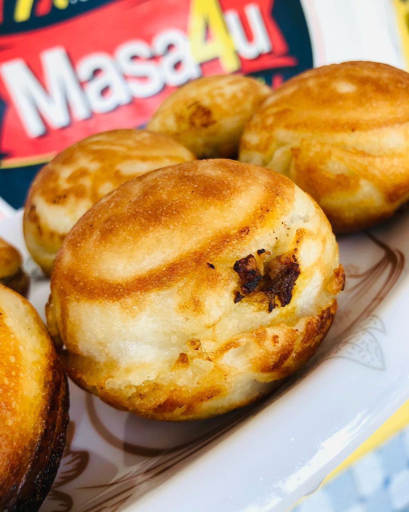

Senatorial Zone
The state is divided into three senatorial zones viz: Northern zone, Central zone and Southern zone each with a senator representing it in the Senate, while in the House of Representatives, the state has twelve representatives, and in the state House of Assembly, there are thirty-one members.
Local Government Areas
There are 20 Local Government Areas in Bauchi State, namely: Alkaleri, Bauchi, Bogoro, Dambam, Darazo, Dass Gamawa, Ganjuwa, Giade, Itas/Gadau, Jama’are, Katagum, Krifi, Miau, Ningi, Shira, Tafawa Balewa, Toro, Warji and Zaki.
Ethnic Groups
In addition, there are a total of 55 ethnic groups in the state which include Hausa, Fulani, Gerawa, Sayawa, Jarawa, Bulewa, Kare-Kare, Kanuri, Warjawa, Zulawa and Badawa. They have varied customs, festivals, historical backgrounds, occupational patterns and beliefs.
Vegetation
Bauchi state has gone through series of transformation. From the colonial era up to independence, it formed part of the Bauchi-Plateau of the then Northern Region until the 1967 state creation exercise, when together with Borno and Adamawa provinces, they constituted the former North Eastern State.
Rainfall
Rains start earlier in the southern part of the state, in April with the highest record of 1300mm per annum and last longer. In contrast, the northern tip of the state receives the rains late usually around June/July and records the highest amount of 700mm per annum.
Weather
The weather experienced in the south and the north varies considerably. In the south, it is humidly hot during the early part of the rainy season. In the north, the hot, dry and dusty weather lingers on for a while. Under these leaders, the state has witnessed steady development in economic, political and socio-cultural spheres.
Languages
Nonetheless, there are cultural similarities in the people’s language, occupational practices, festivals, dress and there is a high degree of ethnic interaction especially in marriage and economic existence.Bauchi state comprises of six emirates. They are Bauchi, Katagum, Misau, Jama’are, Ningi and Dass.
Rivers
The state is watered by a number of rivers. They include Gongola and Jama’are rives, Gubi and Tilden Fulani Dams. There are also lakes like the Maladumba lake in Misau Local Government. All these provide necessary conditions that support agriculture.
Politics
The vegetation types as described above are conditioned by the climatic factors, which in turn determines the amount of rainfall received in the area. The rainfall in Bauchi State ranges between 1300mm per annum in the south and only 700mm per annum in the extreme North.
TOURIST

Yankari Game Reserve is a large wildlife park located in Bauchi State, in northeastern Nigeria. It covers an area of about 2,244 square kilometers (866 sq mi) and is home to several natural warm water springs, as well as a wide variety of flora and fauna. Its location in the heartland of the West African savanna makes it a unique way for tourists and holidaymakers to watch wildlife in its natural habitat. It is home to the remaining Elephants and Lions in Nigeria. It is under the management of Bauchi State Government.
DURBAR
The Durbar festival is an annual cultural, religious and equestrian festival celebrated in several northern cities of Nigeria including Kano, Katsina, Sokoto, Zazzau, Bauchi, Bida and Ilorin. The festival marks the end of Ramadan and also coincides with the Muslim festivities of Eid al-Adha and Eid al-Fitri. It begins with prayers at dawn, followed by a colourful mounted parade of the Emir and his retinue of horsemen, musicians, and artillerymen. At the Durbar festivals noblemen travel to pay homage to the Emir and reaffirm their loyalty to their various emirates. The festival dates back to the 14th century in Kano, the largest city in Northern Nigeria. The Kano durbar festival is a four-day extravaganza of opulence, horsemanship, and street parades.

Masa or Waina is a rice cake that is from the northern part of Nigeria and is traditionally eaten by the Hausa tribe. Nigeria is a country with different cultures, traditions, people and with that comes assorted food, cooking method, and recipe. The Northerners are known for their healthy and sumptuous meals and Masa is one of such meals. Masa bauchi is the popular identity for every masa in the north; irrespective of the state or town. It is used occasionally in ceremonial and festive periods and when combined with suya as snacks/appetizers, the result is simply AH-mazing!
Masa is a fermented puff batter of short-grain species of rice called tuwo rice/millet/ maize or sorghum that is cooked in a pan which usually makes it have the oval shape. The good thing about tuwo rice is that it tend to stick together with one another and retain moisture, unlike the conventional rice grains that tends to stay apart. It reminds me so much of the Japanese sushi and rice cakes that are incredibly sticky and rice is the main ingredient. And also Sinasir, a delicacy in Borno, Northern part of Nigeria which is a white rice recipe fried like pancakes. Just like masa, it is made with the soft variety of rice, the type used for Tuwo Shinkafa.